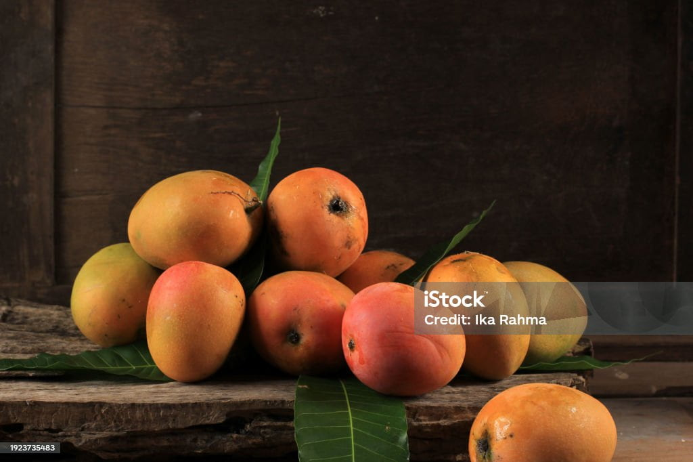

Why Krishnagiri Mangoes are Famous

Krishnagiri is one of the largest mango producing districts in Tamil Nadu. The mangoes from Krishnagiri are known for their sweetness, juiciness, and unique flavour that makes them special compared to mangoes from other parts of India!
Popular Mango Varieties in Krishnagiri
- 🥭 Alphonso Mango
- 🥭 Banganapalli Mango
- 🥭 Neelam Mango
- 🥭 Totapuri Mango
Best Time to Visit Krishnagiri for Mangoes
The best time to visit Krishnagiri for mangoes is between April and July when the mango season is at its peak. During this time the markets are full of fresh and affordable mangoes!
Read our complete guide to the Krishnagiri Mango Festival 2026!
Also check our Krishnagiri Mango Season Guide!
Where to Buy Mangoes in Krishnagiri
You can find the freshest Krishnagiri mangoes at the local fruit markets near the bus stand and along the main market road in Krishnagiri town.
Frequently Asked Questions About Krishnagiri Mangoes
1. Why is Krishnagiri famous for mangoes?
Krishnagiri is famous for mangoes because it is the largest mango producing district in Tamil Nadu! The fertile soil, perfect climate, and generations of farming expertise make Krishnagiri mangoes exceptionally sweet and juicy!
2. When is mango season in Krishnagiri?
The Krishnagiri mango season runs from April to July every year. This is the best time to visit Krishnagiri to enjoy fresh, affordable and delicious mangoes straight from the orchards!
3. What are the best mango varieties in Krishnagiri?
The most popular mango varieties in Krishnagiri are Alphonso, Banganapalli, Neelam, Totapuri and Malgova. Each variety has its own unique taste and texture!
4. Where can I buy Krishnagiri mangoes?
You can buy fresh Krishnagiri mangoes at the local fruit markets near the main bus stand, directly from mango orchards during the season, and at the famous Krishnagiri Mango Festival!
5. When is the Krishnagiri Mango Festival?
The Krishnagiri Mango Festival is held every year between June and July during peak mango season. It features mango exhibitions, tastings, competitions and amazing street food!